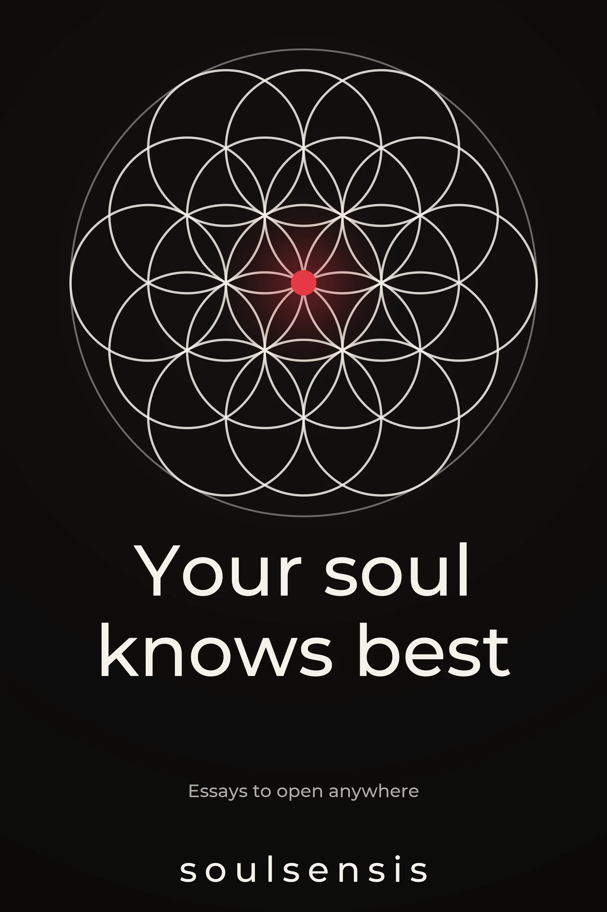
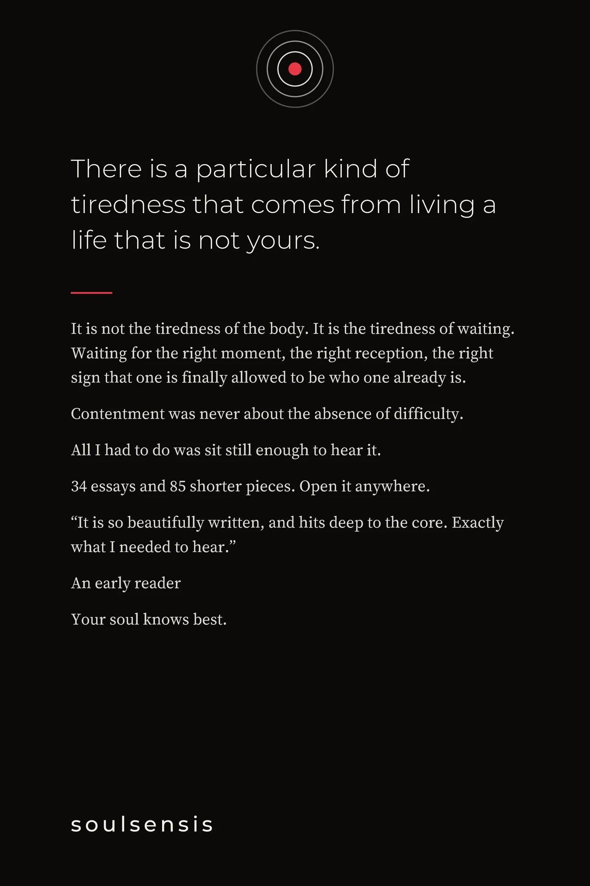
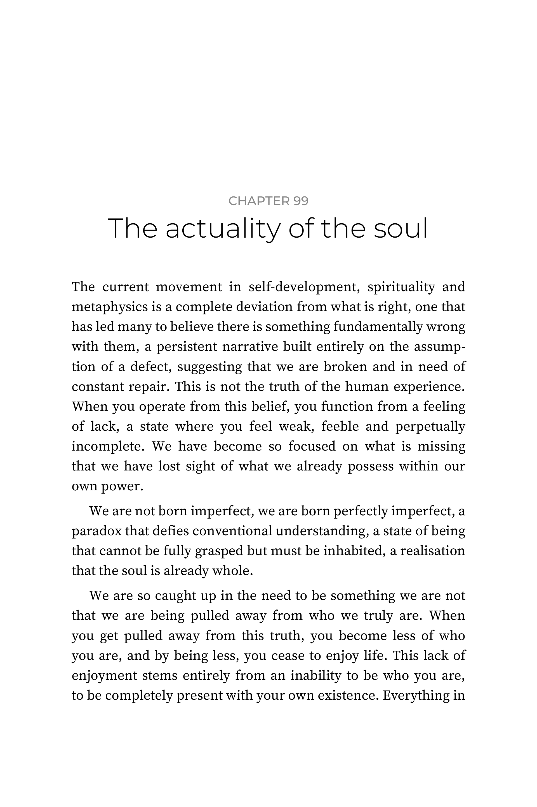
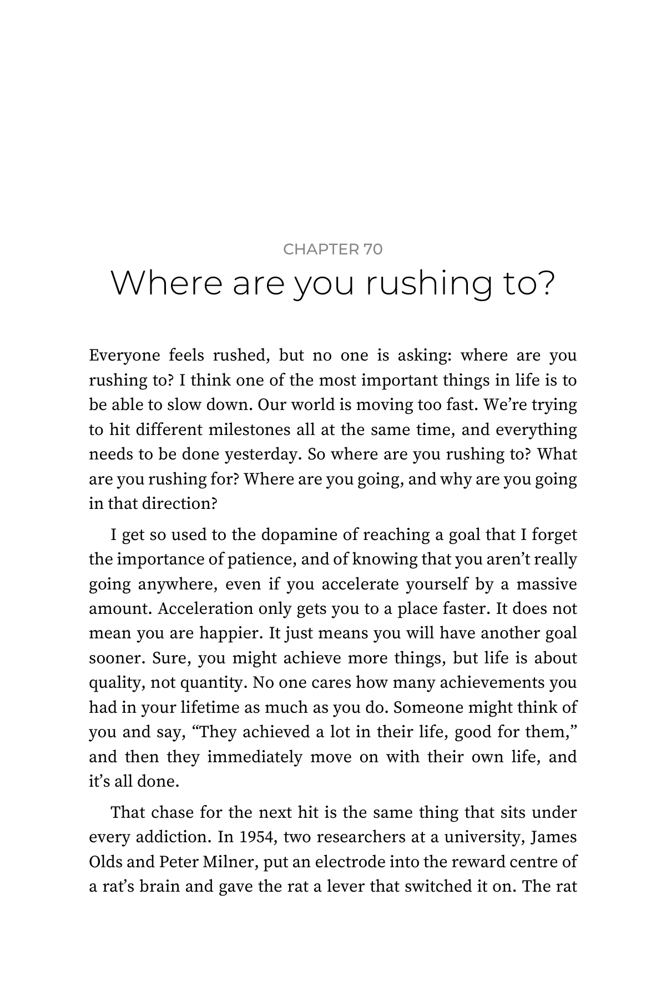
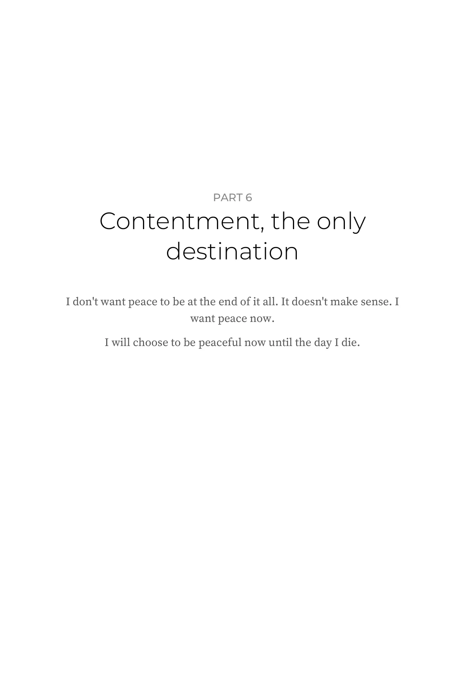
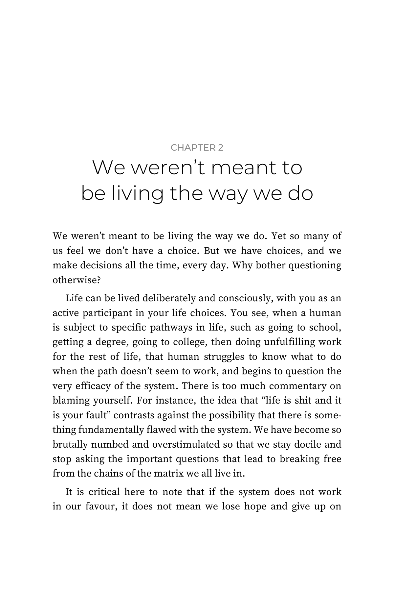
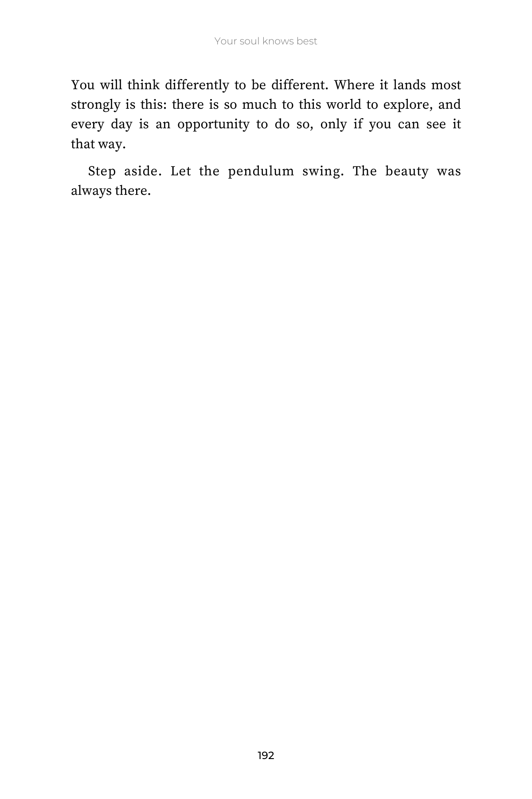
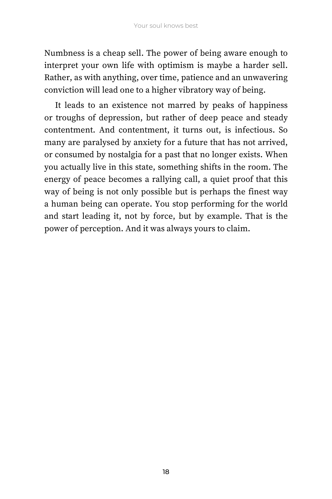

The book
Your soul knows best.
There is a particular kind of tiredness that comes from living a life that is not yours.
A$4.99 on Kindle, A$24.99 in paperback. The book is being finished.
Look inside

On the back
Listen to your soul. All it has wanted is to be heard.
It is not the tiredness of the body. It is the tiredness of waiting for the right moment, the right reception, the right sign that one is finally allowed to be who one already is.
Contentment was never about the absence of difficulty.
All I had to do was sit still enough to hear it.
34 essays and 79 shorter pieces. Open it anywhere.
Inside
Every piece stands on its own page.






Pages 18 and 19, as printed. Paperback, 6 × 9 inches.
From the book
We weren’t meant to be living the way we do. Yet so many of us feel we don’t have a choice.
But we have choices, and we make decisions all the time, every day. Why bother questioning otherwise?
Life can be lived deliberately and consciously, with you as an active participant in your life choices. You see, when a human is subject to specific pathways in life, such as going to school, getting a degree, going to college, then doing unfulfilling work for the rest of life, that human struggles to know what to do when the path doesn’t seem to work, and begins to question the very efficacy of the system.
Feel at home again.
You are not alone in this life.
What readers have said.
“It is so beautifully written, and hits deep to the core. Exactly what I needed to hear.”
“Your words really… gave me a great sense of relief. Very soothing.”
“This actually got to me this morning… thank you.”
“…I’m glad there are people like you in this world to encourage me to look ahead and keep moving forward.”
Before you buy.
Was this written by a human?
Yes. Every line is the author's own, most of it written by hand in a journal first.
Why is the author anonymous?
So the writing can stay honest. The essays describe real mornings, real jobs and real shame, and a name would mean softening them. The author stays soulsensis so nothing has to be left out.
How long is the book?
It is being finished as one larger book, with the author's journals added, so the length and the contents may change. Written to be read slowly and returned to.
Is it a self-help book?
No steps, no hacks, no morning routine. It is one person thinking honestly from inside their own life. It is not medical or psychological advice; if you are struggling, please talk to a doctor, a counsellor or a crisis line.
Can I read some of it first?
Yes. Pages from the book are above, as printed, and the essays the book grew from are read aloud on YouTube.
Is the book on sale yet?
Not yet. It goes on sale when it is done.
Formats
Choose how you want to read it.
Paperback
A$24.99US$14.99
6 × 9 inches, matte cover, printed by Amazon and posted to you. The one to leave on the bedside table and lend.
Kindle
A$4.99US$2.99
The whole book on your phone, Kindle or tablet.
Or send me an email and I will tell you the same way.
Prices in Australian dollars unless marked. Amazon sets local prices in other countries.